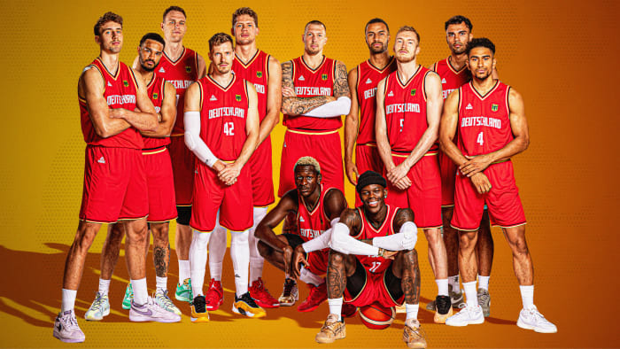
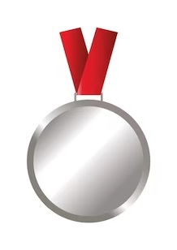

Équipe d'Allemagne

| Médailles (depuis le début des JO) |
Or
|
0 |
Argent
 |
0 |
Bronze
|
0 |
| Meilleure place |
4ème |
| Numéro |
Nom |
Matchs joués |
Minutes jouées |
Contres |
Interceptions |
Passes |
Rebonds |
Points |
| 0 |
Isaac Bonga |
6 |
21.9 |
0.3 |
0.7 |
1 |
3.7 |
9.2 |
| 1 |
Oscar Da Silva |
1 |
0.2 |
0 |
0 |
0 |
0 |
0 |
| 4 |
Maodo Lo |
3 |
7.1 |
0.3 |
0 |
1.3 |
0.3 |
0.7 |
| 5 |
Niels Giffey |
2 |
0.2 |
0 |
0 |
0 |
0 |
0 |
| 6 |
Nick Weiler-Babb |
6 |
17.4 |
0 |
1.3 |
1.8 |
1.3 |
3.7 |
| 7 |
Johannes Voigtman |
6 |
18.3 |
0.2 |
0.3 |
0.8 |
4.3 |
4.5 |
| 9 |
Franz Wagner |
6 |
32 |
0.5 |
2 |
2.5 |
5.8 |
18.5 |
| 10 |
Daniel Theis |
6 |
22.7 |
0.8 |
1 |
1.5 |
7 |
7.8 |
| 13 |
Moritz Wagner |
6 |
17 |
0.3 |
0.3 |
2 |
3.7 |
9.8 |
| 17 |
Dennis Schröder |
6 |
31.4 |
0 |
1.2 |
7.5 |
2.8 |
17.2 |
| 32 |
Johannes Thiemann |
6 |
17.1 |
0.2 |
0.5 |
0.5 |
3 |
5.5 |
| 42 |
Andreas Obst |
6 |
18.6 |
0 |
0.3 |
0.8 |
0.7 |
6.2 |
Retour